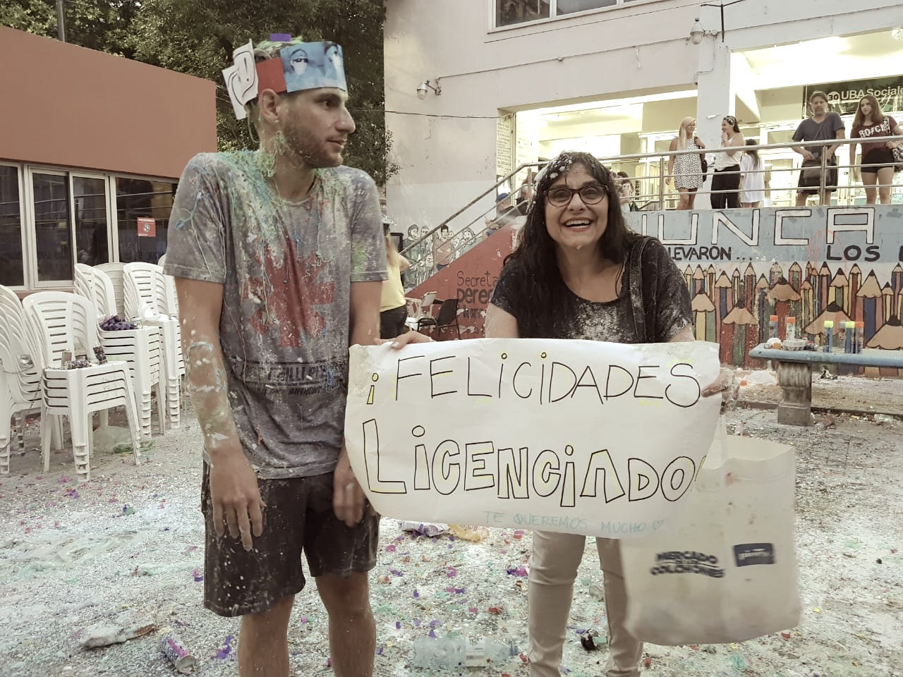
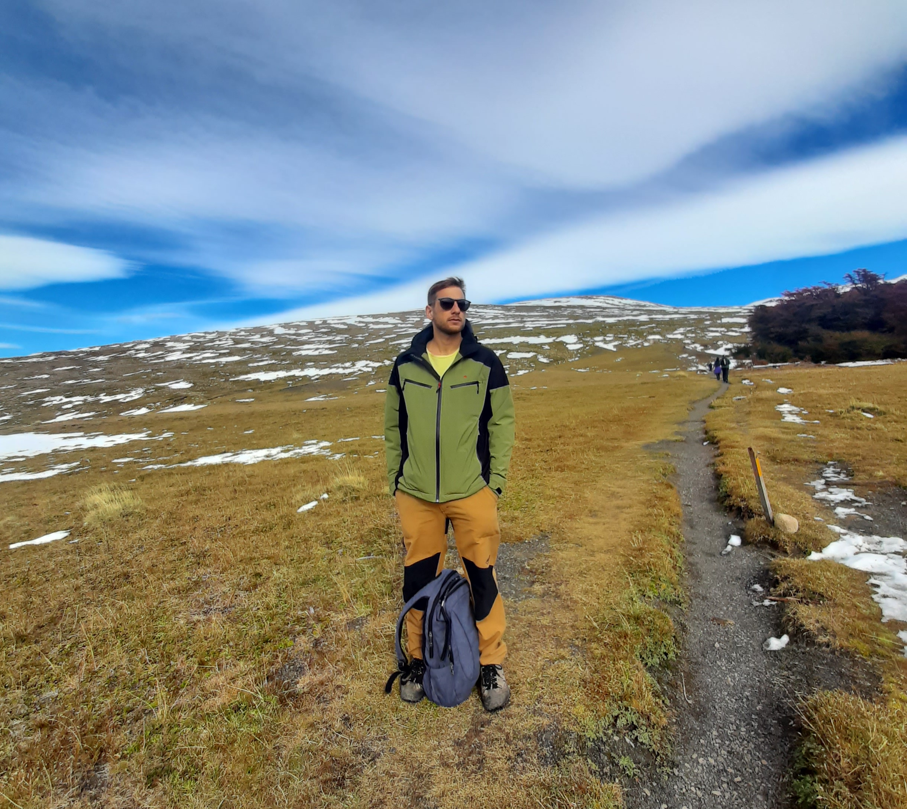
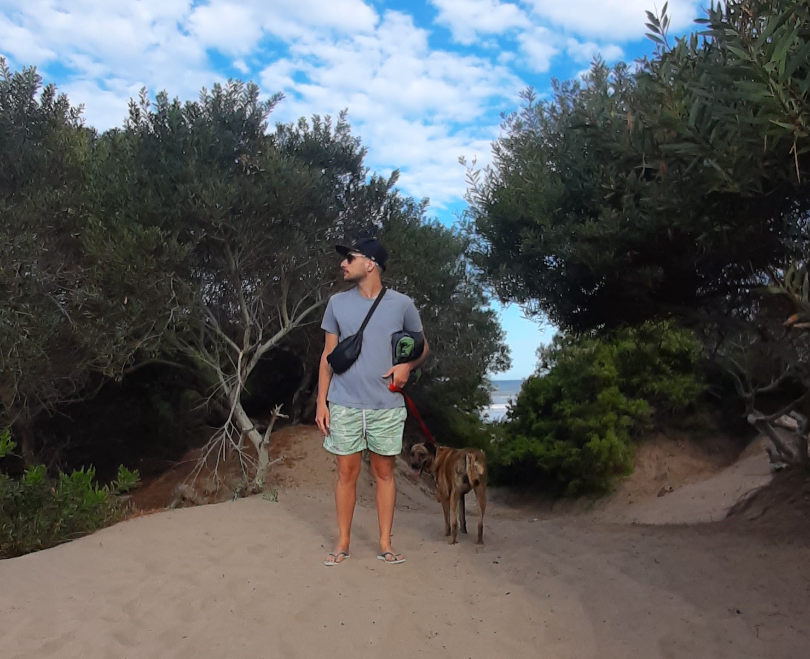
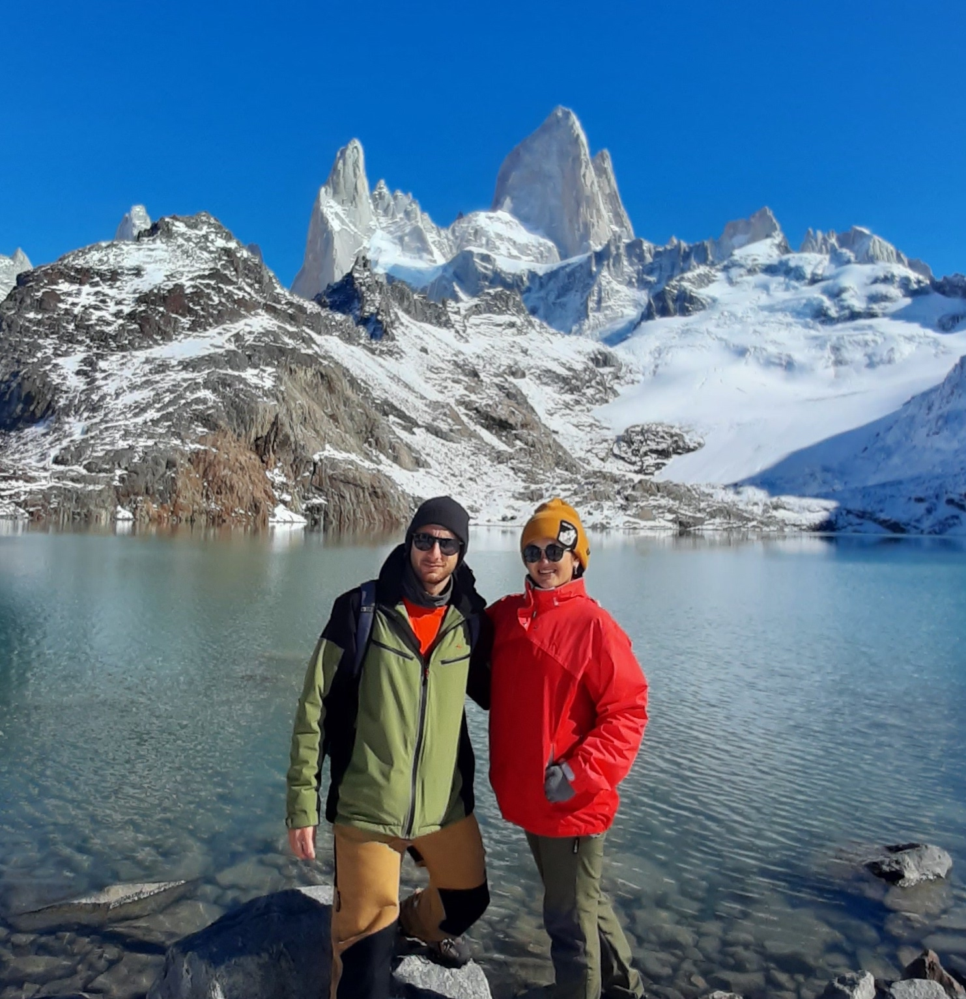

So,
who am I?
This is a brief tour of some relevant data (others perhaps
not so much) of my professional
and academic career, as well as my personal life
so that you can get to know a little better
who I am. I hope you enjoy it.
Resume
Hello, my name is Germán, I have a degree in Sociology (UBA) and during my university career my passion for data grew, which led me to deepen its analysis and treatment until I knew the discipline in which I seek to develop. my professional career: Data Science. I truly believe that Data Science is one of the most powerful tools to understand the reality that surrounds us and act on it, solving the most diverse problems.
I love learning new knowledge and skills, so the dynamism and breadth of this discipline is one of the things that motivates me the most. There is a lot to learn in the world of data given its constant innovation, so being aware of new technologies or the basic understanding of the subject we are addressing at that time requires constant learning, and at the same time critical, which encourages profoundly my intellectual curiosity.
Although my professional experience until now has been a bit different, having managed, projected and designed various production processes was a very important help when thinking about the first Data Science projects I carried out. In addition, it gave me the experience of working in a team, diagramming and coordinating the activities of several people at the same time in view of a common goal.
In the same sense, having programmed for so many years in my professional career, paved the way for me to easily incorporate the use of languages such as Python and R.

Going a little deeper into my personality, I consider myself a fast learner, adapting easily to new circumstances, I am very creative and innovative when it comes to solving problems and I have the ability to carry out multiple tasks on a daily basis. I am organized and responsible at work and in my personal life. And although I take my work very seriously, I have a good sense of humor and consider it a fundamental tool when it comes to communicating and transmitting information.
Creativity, expression and communication are skills that I exercise daily since my main hobby is making music. The guitar is the instrument that I handle best because I have practiced it since I was very young, but in recent years I have been delving deeper into the use of digital production tools and specialized software.

My other hobby is hiking. Although it is something that I practice very sporadically, I try to make a good percentage of trekking on each vacation trip, and if it is in the mountains, even better. Luckily it is an activity that I usually do as a couple or accompanied by my dog, which makes the experience much more entertaining and bearable.

To keep fit during the year I usually ride my bike quite a bit (doing up to 20km a day when the weather and my commitments allow it). In an activity that I really enjoy and while doing it I take the opportunity to listen to new music or some of my favorite Podcasts. In addition, I have been practicing yoga once a week for a couple of years, which helps me a lot to exercise flexibility and elongation after so many hours a week on the bike or with the guitar.